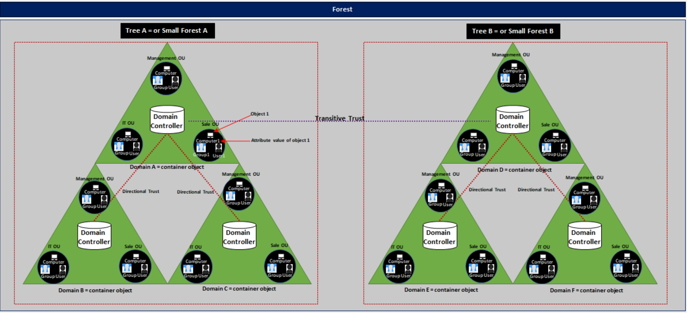

Toggle Menu
About me
Education / Work Experience / Projects
General Questions
Tools (AS/Pentest)
My Attacks Examples
Cyber Concepts
Concepts
Web Vulnerabilities
G-Cloud
ISO 27001
Software
Active Directory
AD Components
AD Authentication
AD LDAP/LDAPS
AD Attacks

Active Directory Physical Components
Component
Description
Domain Controller (DC)
Servers that store the AD database and authenticate users and devices in the network.
Global Catalog (GC)
Distributed data store that contains partial information about objects from all domains in the forest.
DNS
Translates domain names to IP addresses, enabling domain controllers and services to be found.
ADFS (Active Directory Federation Services)
Provides single sign-on (SSO) and identity federation services across multiple organizations or systems.
Active Directory Logical Components
Component
Description
Domain
Logical grouping of objects such as users, groups, and computers that share a central directory.
Forest
The top-level container consisting of multiple domains, all sharing a common schema and global catalog.
Organizational Unit (OU)
A container within a domain that organizes objects like users, groups, and computers for delegation of administrative tasks.
Active Directory Schema
Defines the types of objects and their attributes that can be stored in AD (e.g., user, group, device).
Trusts
Relationships between domains that allow users from one domain to access resources in another.
Group Policy Objects (GPOs)
Configuration settings that define user and computer environments across domains.
LDAP (Lightweight Directory Access Protocol)
Protocol used to query and modify objects within AD.
Kerberos Authentication
A protocol used to authenticate users and computers in a secure manner.